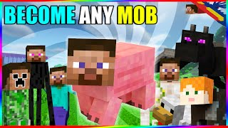
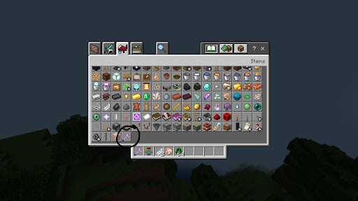

How To Become Any Mob In Minecraft

In this article I am going to provide one of the best Mod named Become Any Mob Mod for Minecraft.
Ever wanted to be a Mob to troll your friends? If yes, Then this is going to be the perfect Mod for you.
How To Download The Mod
Follow the steps provided below to Download Become Any Mob Mod for Minecraft.
Firstly download the mod file from here
After downloading, Open your Zarchiver.
Then find the downloaded file in the folder named 'Downloads'
Extract the file. It will ask you a password which is 'SUBSCRIBE'
Then just go into your file manager
Then go to the folder 'Downloads' again.
Then, click on the extracted file and your minecraft will open automatically
Then just create new world or edit your existing world.
Turn on the option called 'Expiripental gameplay'
If it is not there, Then turn on all the options in 'Expiripents option'
Then create a new world and find a thing like a binacular in your mcpe

Then just go in front of any mob.
And you will see a option coming 'Morph'
Click on it, And you will turn into that mob
NOW ENJOY :)